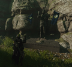
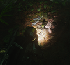
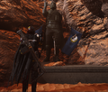
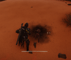

绝地潜兵 Training 设施
Instructions: Further elaboration on training course是必需.
"绝地潜兵 Training 设施" can only be found at the Earn Your 绝地潜兵 Cape 任务.
the “绝地潜兵训练基地” is one of possibly many 绝地潜兵训练基地 on Zegema Paradise (formerly Mars), where 绝地潜兵 完成 basic training on the use of the AR-23 解放者, P-2 Peacemaker, G-12 High 爆炸, and various 战略配备.
As of the beginning of the True 光能者 入侵, all facilities on Mars have ceased 功能, and training now takes place on Zegema Paradise with 几个 additional optional activities, such a 纪念馆 statue with 几个 Entrenchment Tools nearby.
Locations
Landing Pad
This is where 鹈鹕 shuttles carrying 绝地潜兵 recruits touch down to 运送 them. The "欢迎来到绝地潜兵训练" sign shown in the 图库 is located here.
大门
This is where you enter the 绝地潜兵 Training 设施 and where 基本信息 Brasch gives 绝地潜兵 recruits a speech.
Training 设施
This is the 主体 章节 of the 绝地潜兵 Training 设施 where you 完成 the tutorial. This includes areas like the 障碍 Course, Battlefield Injury Simulator, and 战略配备 射程 where recruits 完成 物理 tests and controlled combat scenarios.
Graduation Chamber
In the Graduation Chamber, 绝地潜兵 recruits who have completed the training course are given their first cape and are then sent to fight in the 星系战争.
Rocket Platform
This is where 绝地潜兵 recruits are sent to Super Destroyers to fight in the 星系战争. If you 继续 past the rocket platform, there are a few secrets to be found in the surrounding area, namely a 火焰喷射器 支援武器 下一个 to a charred corpse, and a statue of a 未知 绝地潜兵 wearing the SC-34 Infiltrator 护甲, with a shovel at their feet.

The secret statue
The secret 火焰喷射器
The secret statue in the old 设施
The secret 火焰喷射器 in the old 设施
背景故事
Here's a transcript of 绝地潜兵 Training 设施 sign:
欢迎来到绝地潜兵训练
赢得你的披肩
查看地图以寻找绝地潜兵训练基地